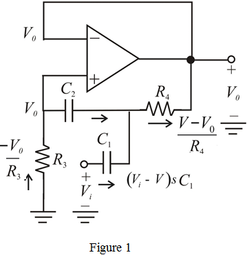
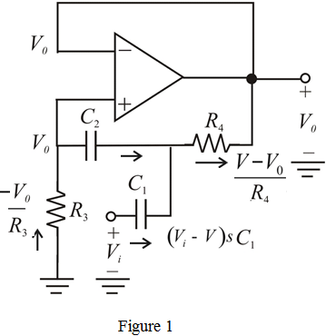
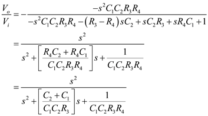

Refer to Figure 16.33 (b) in the textbook for the high-pass filter realization by injecting the input signal through capacitor,  .
.
The modifed circuit with current directions is shown in Figure 1.

Refer to Figure 16.33 (b) in the textbook for the high-pass filter realization by injecting the input signal through capacitor, .
The modifed circuit with current directions is shown in Figure 1.

The 3-dB frequency is, and the capacitor values are, .
For maximally flat response, the resonant frequency is equal to the 3 dB frequency, that is, and the quality factor is .
From the circuit in Figure 1, observed that no current can flow into the positive terminal.
Apply Kirchhoff’s current law at positive terminal of the op-amp.
…… (1)
The sum of currents at the node  is zero. Apply Kirchhoff’s current law at node
is zero. Apply Kirchhoff’s current law at node 

Substitute for  .
.
Now the transfer function is,

Therefore, the transfer function is, .
When , the gain is,
, the gain is,
When , the gain is,
, the gain is,
Thus, the circuit is a high-pass filter.
The high frequency gain is the gain at the frequency 
Thus, the high frequency gain of the circuit is,  .
.
Compare the term with standard second order expression, 
The ratio is,
Substitute for  , , 10 nF for .
, , 10 nF for .
The resonance frequency is,
Calculate the value of the resistance, 
Thus, the design parameters are, .